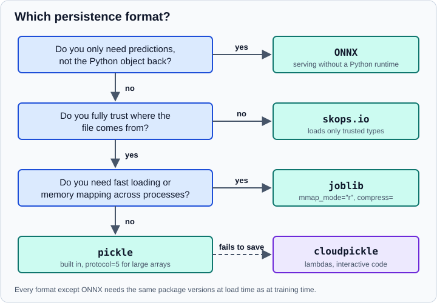

Model Persistence and Security in scikit-learn
|
This content was generated with the assistance of AI and should be verified against the official documentation before being relied on in production. |
A trained scikit-learn model is a Python object, and saving it so that another process can load it later is called model persistence. It looks like a one-line job and it is the part of a project with the most serious security and maintenance consequences: most formats are executable code in disguise, and none of them promises to load across scikit-learn versions. This page compares the five options the official documentation describes (ONNX, skops.io, pickle, joblib and cloudpickle), gives runnable code for each, shows what a malicious file can do, and lists what to store beside a model so it can be rebuilt. It targets scikit-learn 1.9 (1.9.1 at the time of writing) and was checked in October 2026. Examples target Python 3.13 or 3.14 and were run on Python 3.13. The examples were run with Python 3.13, scikit-learn 1.9.1, NumPy 2.5.4, joblib 1.6.0, skops 0.16.0 and, for ONNX, skl2onnx 1.20.0 with onnxruntime 1.31.1; the printed output is the real output.
Which format to choose
The user guide reduces the decision to four questions, asked in this order, and the figure follows the same order.

| Format | Advantages | Risks and limits |
|---|---|---|
ONNX |
Serving without a Python environment; training and serving environments are independent; the most secure option. |
Not every scikit-learn model is supported, custom estimators need extra work, and the original Python object cannot be rebuilt from the file. |
|
More secure than pickle-based formats; contents can be inspected before loading. |
Slower than pickle-based formats, supports fewer types, and needs the same environment as training. |
|
Native to Python, serialises most objects, and is memory-efficient with |
Loading can execute arbitrary code; needs the same environment as training; no memory mapping. |
|
Efficient with large NumPy arrays, supports memory mapping, easy compression. |
A pickle-based format: loading can execute arbitrary code; needs the same environment as training. |
|
Serialises code that has no importable name, such as lambdas and functions defined in a notebook or script. |
A pickle-based format; no forward-compatibility guarantees; loading can execute arbitrary code. |
In short: if the consumer only needs predictions, convert to ONNX. If it needs the Python object and the file might come from someone you do not control, use skops.io. If you control both ends, joblib or pickle are fine for speed. Reach for cloudpickle only when the others cannot serialise your model, typically a pipeline with a lambda.
Train something to persist
The user guide trains a HistGradientBoostingClassifier on the iris data. The examples below use the same model so the
formats can be compared on the same object.
pickle and joblib
pickle is part of the standard library. joblib uses the same protocol but stores large NumPy arrays more efficiently,
can compress, and can memory-map arrays when loading. Both follow the same dump and load API. The user guide
recommends protocol=5 for pickle because it makes writing and reading big NumPy arrays (typical fitted attributes)
cheaper in memory and time; on Python 3.8 and later pickle.HIGHEST_PROTOCOL is equivalent.
import pickle
import warnings
from pathlib import Path
import joblib
import numpy as np
import skops.io as sio
from sklearn.datasets import load_iris
from sklearn.ensemble import HistGradientBoostingClassifier
X, y = load_iris(return_X_y=True)
clf = HistGradientBoostingClassifier(random_state=0).fit(X, y)
reference = clf.predict_proba(X[:3])
# pickle (standard library)
with open("model.pkl", "wb") as f:
pickle.dump(clf, f, protocol=5)
with open("model.pkl", "rb") as f:
print("pickle", np.allclose(pickle.load(f).predict_proba(X[:3]), reference))
# joblib: no compression keeps memory mapping possible, compress= trades speed for size
joblib.dump(clf, "model.joblib")
joblib.dump(clf, "model-compressed.joblib", compress=3)
print("joblib", np.allclose(joblib.load("model.joblib", mmap_mode="r").predict_proba(X[:3]), reference))
with warnings.catch_warnings(record=True) as caught:
warnings.simplefilter("always")
joblib.load("model-compressed.joblib", mmap_mode="r")
print("mmap on a compressed file:", str(caught[0].message)[:62])
# skops: only types you approve are loaded
sio.dump(clf, "model.skops")
unknown = sio.get_untrusted_types(file="model.skops")
print("types to review:", unknown)
loaded = sio.load("model.skops", trusted=unknown)
print("skops", np.allclose(loaded.predict_proba(X[:3]), reference))
for name in ("model.pkl", "model.joblib", "model-compressed.joblib", "model.skops"):
print(f"{name:26s}{Path(name).stat().st_size:>10,} bytes")Output:
pickle True joblib True mmap on a compressed file: mmap_mode "r" is not compatible with compressed file model-com types to review: ['sklearn.ensemble._hist_gradient_boosting.predictor.TreePredictor'] skops True model.pkl 185,928 bytes model.joblib 212,688 bytes model-compressed.joblib 43,652 bytes model.skops 1,259,570 bytes
What the example shows:
-
All three formats reproduce the predictions exactly (
np.allcloseis true). -
Memory mapping and compression are exclusive.
joblib.load(..., mmap_mode="r")works on an uncompressed file and is how several worker processes share one copy of a big model. On a compressed file joblib ignores the flag and warns, as above. -
Sizes differ a lot and depend on the model. Here
compress=3shrinks the joblib file to about a fifth, and the skops file is the largest. Do not generalise from one model; measure yours. -
The same API.
joblib.dump(obj, path)andjoblib.load(path)replacepickle.dump(obj, file, protocol=5)andpickle.load(file), and a file path or a file object both work.
joblib is imported directly
sklearn.externals.joblib, the bundled copy that older tutorials import, no longer exists. Install
and import joblib itself (it is a dependency of scikit-learn, so it is already present). A file written through the old
module path is an ordinary joblib or pickle file, but it references classes of an old scikit-learn and is unlikely to
load today.
skops.io: loading only what you trust
skops.io stores an estimator in a format that does not use the pickle protocol, and refuses to load any type
that is not trusted by default or by you. The API mirrors pickle (dump, dumps, load, loads); the difference is
that load needs a trusted list unless every type is already on the default list. get_untrusted_types returns the
types that the file wants and that are not trusted by default, so you can read them before deciding. In the example above
the only extra type is scikit-learn’s own TreePredictor, which a reviewer can reasonably accept.
The process to follow is: obtain the file, call get_untrusted_types, read the list, and pass it as trusted only if
you recognise everything on it. Passing the result to load without reading it defeats the purpose.
Limits, as the user guide states: skops.io supports fewer types than pickle, is slower, and still requires the same environment as training, because it restores real Python objects.
cloudpickle for custom code
pickle and joblib store functions by reference (a module name and a function name), so a function that has no
importable name cannot be stored. The standard example is a FunctionTransformer wrapping a lambda.
import pickle
import joblib
import numpy as np
import cloudpickle
from sklearn.datasets import load_iris
from sklearn.linear_model import LogisticRegression
from sklearn.pipeline import make_pipeline
from sklearn.preprocessing import FunctionTransformer
X, y = load_iris(return_X_y=True)
pipe = make_pipeline(FunctionTransformer(lambda a: np.log1p(a)), LogisticRegression(max_iter=1000)).fit(X, y)
try:
pickle.dumps(pipe)
except Exception as e:
print("pickle:", type(e).__name__)
try:
joblib.dump(pipe, "p.joblib")
except Exception as e:
print("joblib:", type(e).__name__)
restored = pickle.loads(cloudpickle.dumps(pipe))
print("cloudpickle:", np.array_equal(restored.predict(X), pipe.predict(X)))Output:
pickle: PicklingError joblib: PicklingError cloudpickle: True
The better fix is usually to move the function into a module of your package and import it, which makes the pipeline loadable with plain pickle or joblib. The user guide describes cloudpickle as a last resort. It stores the code itself inside the file, so loading needs the same cloudpickle version and the same versions of all libraries the code used, and it gives no forward-compatibility guarantee. It is still a pickle-based format, so it has the same security exposure.
ONNX for serving without Python
ONNX (Open Neural Network Exchange) is a binary graph format run by a separate runtime, such as ONNX Runtime. The
converter for scikit-learn models is the sklearn-onnx package (imported as skl2onnx). The serving environment needs
only the runtime, which can be much smaller than a Python data-science stack and does not require Python at all in some
deployments. The price is that the original Python object is gone, not every estimator is supported, and custom
estimators need hand-written converters. The converter needs the input type and shape, which the example gives as a
float32 sample row.
import numpy as np
from onnxruntime import InferenceSession
from skl2onnx import to_onnx
from sklearn.datasets import load_iris
from sklearn.linear_model import LogisticRegression
from sklearn.pipeline import make_pipeline
from sklearn.preprocessing import StandardScaler
X, y = load_iris(return_X_y=True)
model = make_pipeline(StandardScaler(), LogisticRegression(max_iter=1000)).fit(X, y)
onx = to_onnx(model, X[:1].astype(np.float32), options={id(model): {"zipmap": False}})
with open("iris.onnx", "wb") as f:
f.write(onx.SerializeToString())
sess = InferenceSession("iris.onnx", providers=["CPUExecutionProvider"])
input_name = sess.get_inputs()[0].name
labels, probabilities = sess.run(None, {input_name: X[:5].astype(np.float32)})
print(input_name, labels, probabilities.shape)
print(np.array_equal(labels, model.predict(X[:5])), np.allclose(probabilities, model.predict_proba(X[:5]), atol=1e-4))Output:
X [0 0 0 0 0] (5, 3) True True
Install the two packages with pip install skl2onnx onnxruntime; they are separate projects and are not part of
scikit-learn. Things to check:
-
The ONNX model computes in float32, so probabilities match scikit-learn only approximately (within 1e-4 in this example), and predicted labels can differ for samples that sit on a decision boundary.
-
options={id(model): {"zipmap": False}}makes the classifier return a plain array of probabilities instead of a list of dictionaries, which is easier to serve. -
Conversion can fail. In this environment, converting a
HistGradientBoostingClassifier(the model the user guide uses in its own overview) raised aValueErrorfrom the converter when it built the tree-ensemble node. Check the sklearn-onnx supported-model list and test the conversion on your model before committing to ONNX. -
ONNX files can still describe arbitrary computation, so the user guide recommends serving them in a sandboxed environment to limit computational and memory exploits. They are safer than pickle, not harmless.
Why pickle-based files are dangerous
Unpickling executes whatever callable the file names. The next example uses a harmless print; a real attacker would
call a system command instead. The example then writes the same object with skops.io, which lists the type as untrusted
and refuses to load it.
import pickle
import skops.io as sio
class Payload:
"""Unpickling calls print(...); an attacker would call something far worse."""
def __reduce__(self):
return (print, ("arbitrary code ran while loading this file",))
pickle.loads(pickle.dumps(Payload())) # the call is executed during loading
blob = sio.dumps(Payload())
print(sio.get_untrusted_types(data=blob))
try:
sio.loads(blob) # refuses: nothing is trusted by default
except Exception as e:
print(type(e).__name__)Output:
arbitrary code ran while loading this file ['__main__.Payload'] UntrustedTypesFoundException
The rules that follow from it:
-
Never unpickle a file from an untrusted source, whether it was written with pickle, joblib or cloudpickle. Treat it like executing a downloaded script. This includes model files downloaded from the Internet, from a shared bucket anyone can write to, or from a user upload.
-
Sign or hash the files you produce, store the digest somewhere an attacker cannot write, and verify it before loading. A checksum proves the file is the one you wrote; it says nothing about files from other people.
-
Prefer skops.io or ONNX whenever a model crosses a trust boundary.
-
Do not load pickle files inside the web process that handles requests if the files can be replaced by users; load once at start-up from a read-only location.
Version compatibility
The user guide is blunt: there is no supported way to load a model trained with a different version of scikit-learn. With skops.io, joblib, pickle or cloudpickle, a model saved with one version might load in another, but this is "entirely unsupported and inadvisable", and the results can differ or the Python process can crash. The same holds for the other libraries involved, mainly NumPy and SciPy. Persisted models are normally portable across operating systems and hardware architectures when the Python and dependency versions are the same.
When the versions do differ, scikit-learn raises InconsistentVersionWarning while unpickling and records the version the
file came from. The example fakes an older version while pickling so the warning can be seen without installing two
releases.
import pickle
import warnings
from unittest import mock
from sklearn.datasets import load_iris
from sklearn.exceptions import InconsistentVersionWarning
from sklearn.linear_model import LogisticRegression
X, y = load_iris(return_X_y=True)
clf = LogisticRegression(max_iter=1000).fit(X, y)
# Simulate a file written by an older release by faking the version stored in the pickle.
with mock.patch("sklearn.base.__version__", "1.6.1"):
blob = pickle.dumps(clf)
warnings.simplefilter("error", InconsistentVersionWarning)
try:
pickle.loads(blob)
except InconsistentVersionWarning as w:
print(w.estimator_name, w.original_sklearn_version, w.current_sklearn_version)Output:
LogisticRegression 1.6.1 1.9.1
Turning the warning into an error, as above, is the recommended policy in a service: a model that loads with a version mismatch should stop the deployment, not serve predictions.
What to store next to the model
To rebuild a similar model with a future release, the user guide recommends saving metadata with the artifact: a reference to an immutable snapshot of the training data, the Python source that produced the model, the versions of scikit-learn and its dependencies, and the cross-validation score obtained on the training data, so a rebuilt model can be checked to be in the same range. The example writes such a sidecar file, including a checksum of the model file, and checks both the checksum and the version when loading.
import hashlib
import json
import platform
from pathlib import Path
import joblib
import numpy as np
import scipy
import sklearn
from sklearn.datasets import load_iris
from sklearn.linear_model import LogisticRegression
from sklearn.model_selection import cross_val_score
from sklearn.pipeline import make_pipeline
from sklearn.preprocessing import StandardScaler
X, y = load_iris(return_X_y=True)
model = make_pipeline(StandardScaler(), LogisticRegression(max_iter=1000))
scores = cross_val_score(model, X, y, cv=5)
model.fit(X, y)
out = Path("artifacts")
out.mkdir(exist_ok=True)
joblib.dump(model, out / "model.joblib")
metadata = {
"python": platform.python_version(),
"scikit-learn": sklearn.__version__,
"numpy": np.__version__,
"scipy": scipy.__version__,
"joblib": joblib.__version__,
"cv_accuracy_mean": round(float(scores.mean()), 4),
"training_script": "train.py",
"training_data_sha256": hashlib.sha256(X.tobytes()).hexdigest()[:16],
"model_sha256": hashlib.sha256((out / "model.joblib").read_bytes()).hexdigest(),
}
(out / "model.json").write_text(json.dumps(metadata, indent=2))
print(json.dumps({k: v for k, v in metadata.items() if k != "model_sha256"}, indent=2))
# At load time: verify the checksum first, then the versions
meta = json.loads((out / "model.json").read_text())
assert hashlib.sha256((out / "model.joblib").read_bytes()).hexdigest() == meta["model_sha256"], "model file was modified"
assert meta["scikit-learn"] == sklearn.__version__, f"trained with {meta['scikit-learn']}, running {sklearn.__version__}"
loaded = joblib.load(out / "model.joblib")
print("reloaded accuracy:", round(float(loaded.score(X, y)), 3))Output:
{
"python": "3.13.18",
"scikit-learn": "1.9.1",
"numpy": "2.5.4",
"scipy": "1.18.1",
"joblib": "1.6.0",
"cv_accuracy_mean": 0.96,
"training_script": "train.py",
"training_data_sha256": "012f498fe9c8b3b3"
}
reloaded accuracy: 0.973
The model_sha256 entry was filtered out of the printed output because it is a 64-character digest.
The deeper fix is to be able to retrain: keep the training script, a pinned lock file or container image, and the data
snapshot, so that a new scikit-learn release means retraining and re-validating instead of hoping an old file loads. Pin
the versions in both environments with pip constraints, conda-lock, uv.lock, pixi or a similar tool, and deploy in
a container so training and serving share the same libraries; see
Dockerfile Fundamentals.
Persist the whole pipeline
Persist a fitted Pipeline (or ColumnTransformer plus model) rather than the bare estimator. The preprocessing steps
hold fitted state (scaler means, encoder categories, imputation values) without which the model’s inputs cannot be
reproduced, and keeping them together removes a whole class of train/serve skew bugs. See
Pipelines. A pipeline made of importable components needs no cloudpickle.
Serving the model
Serving is the last step: load the artifact once, when the service starts, and call predict on batches. Do not reload it
per request. Typical options are a web service in a container, with the model baked into the image or mounted read-only;
an ONNX Runtime service; or a batch job that loads the file, scores a table and exits. For a worked FastAPI example that
loads a model in the application lifespan, see
Serving Data Science and AI Models with FastAPI. For
latency tuning of the prediction call itself, see
Performance & Parallelism.
Older tutorials
| Older advice | Today |
|---|---|
|
Removed. Use |
"Pickle the model and load it on the server" |
Only when you control both ends and the versions match; consider skops.io or ONNX, and verify the file first. |
Persisting only the classifier, with scaling done in the notebook |
Persist the full |
|
Use |
"A pickle from last year still loads, so it is fine" |
Loading across versions is unsupported; it can work and still give different results. |
See also
In the ML (Machine Learning) section: Exporting Pipelines to ONNX and ONNX & Model Interoperability.